Linux 安装
本章节我们将为大家介绍Linux的安装。
本章节以 centos6.4 为例。
centos 下载地址：
可以去官网下载最新版本：https://www.centos.org/download/
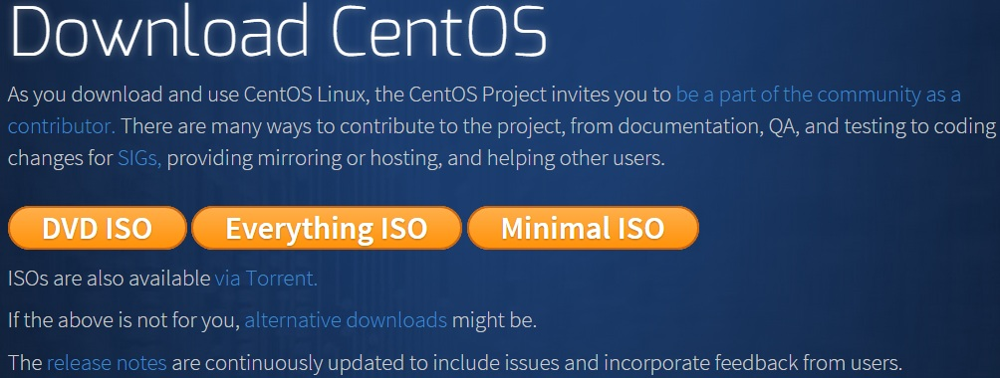
以下针对各个版本的ISO镜像文件，进行一一说明：
- CentOS-7.0-x86_64-DVD-1503-01.iso : 标准安装版，一般下载这个就可以了（推荐）
- CentOS-7.0-x86_64-NetInstall-1503-01.iso : 网络安装镜像（从网络安装或者救援系统）
- CentOS-7.0-x86_64-Everything-1503-01.iso: 对完整版安装盘的软件进行补充，集成所有软件。（包含centos7的一套完整的软件包，可以用来安装系统或者填充本地镜像）
- CentOS-7.0-x86_64-GnomeLive-1503-01.iso: GNOME桌面版
- CentOS-7.0-x86_64-KdeLive-1503-01.iso: KDE桌面版
- CentOS-7.0-x86_64-livecd-1503-01.iso : 光盘上运行的系统，类拟于winpe
- CentOS-7.0-x86_64-minimal-1503-01.iso : 精简版，自带的软件最少
注：建议安装64位Linux系统。
旧版本下载地址：https://wiki.centos.org/Download
接下来你需要将下载的Linux系统刻录成光盘或U盘。
注：你也可以在Window上安装VMware虚拟机来安装Linux系统。
Linux 安装步骤
1、首先，使用光驱或U盘或你下载的Linux ISO文件进行安装。
界面说明：
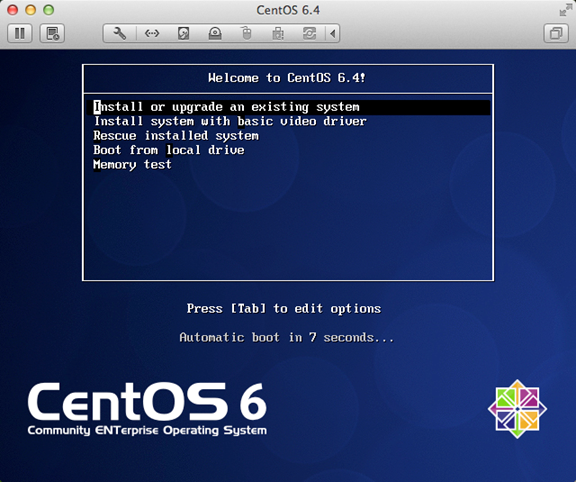
Install or upgrade an existing system 安装或升级现有的系统
install system with basic video driver 安装过程中采用基本的显卡驱动
Rescue installed system 进入系统修复模式
Boot from local drive 退出安装从硬盘启动
Memory test 内存检测
注：用联想E49安装时选择第一项安装时会出现屏幕显示异常的问题，后改用第二项安装时就没有出现问题
2、这时直接"skip"就可以了
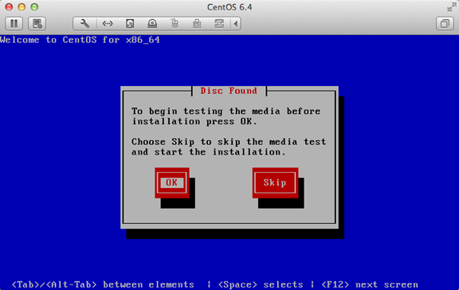
3、出现引导界面，点击"next"
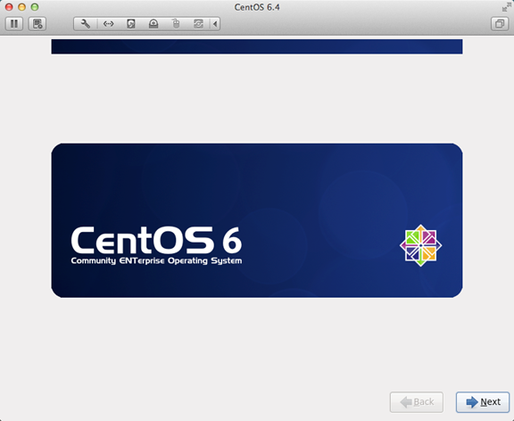
4、选中"English（English）"否则会有部分乱码问题
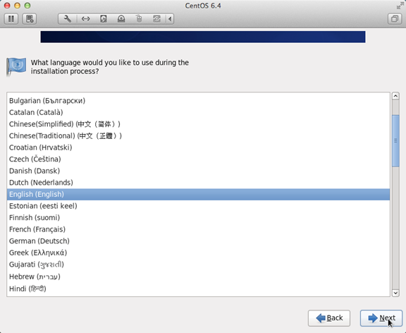
5、键盘布局选择"U.S.English"
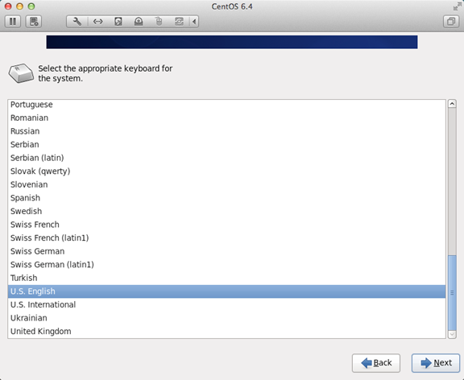
6、选择"Basic Storage Devices"点击"Next"
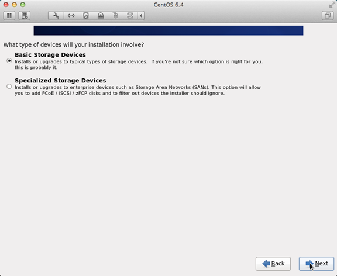
7、询问是否忽略所有数据，新电脑安装系统选择"Yes,discard any data"
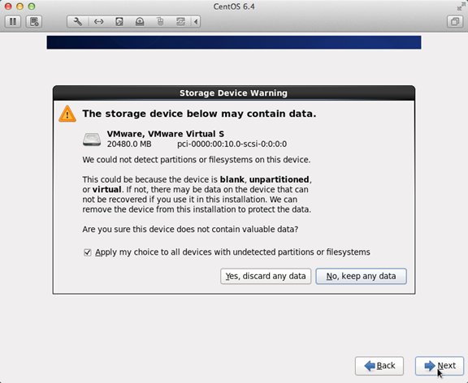
8、Hostname填写格式"英文名.姓"
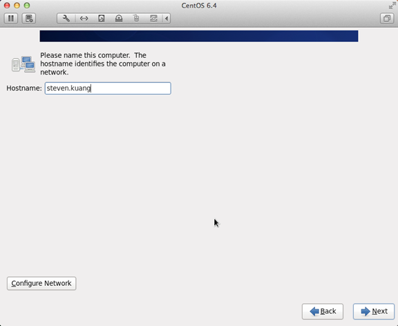
9、网络设置安装图示顺序点击就可以了
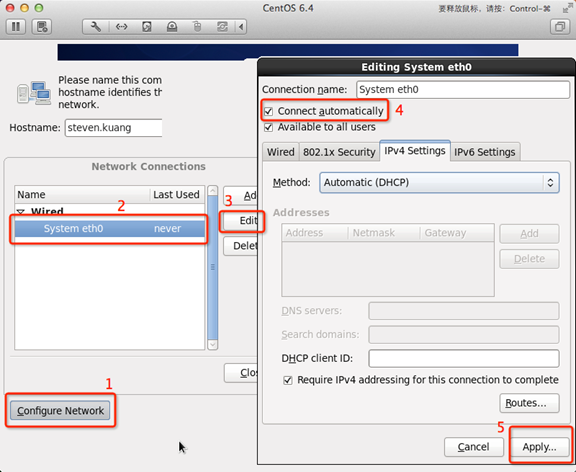
10、时区可以在地图上点击，选择"shanghai"并取消System clock uses UTC前面的对勾
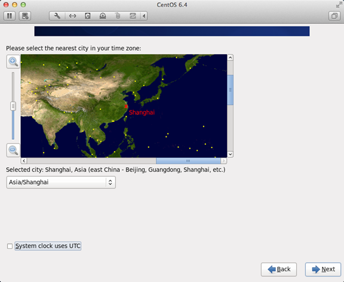
11、设置root的密码
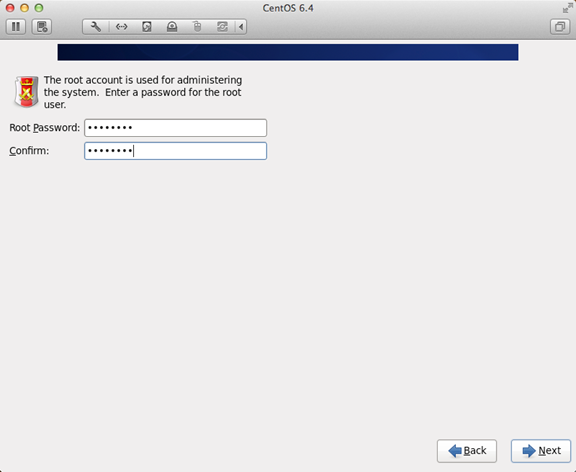
12、硬盘分区，一定要按照图示点选

13、调整分区，必须要有/home这个分区，如果没有这个分区，安装部分软件会出现不能安装的问题

14、询问是否格式化分区
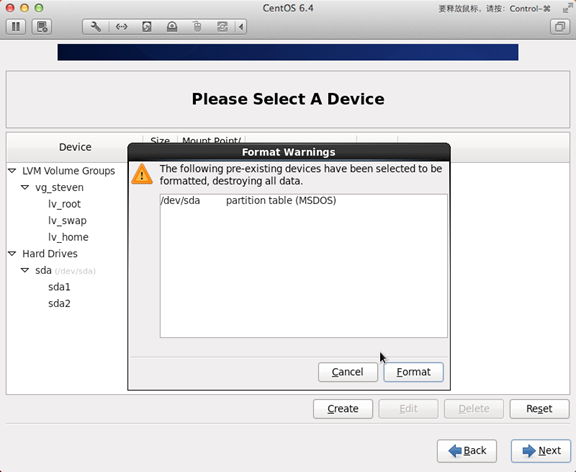
15、将更改写入到硬盘
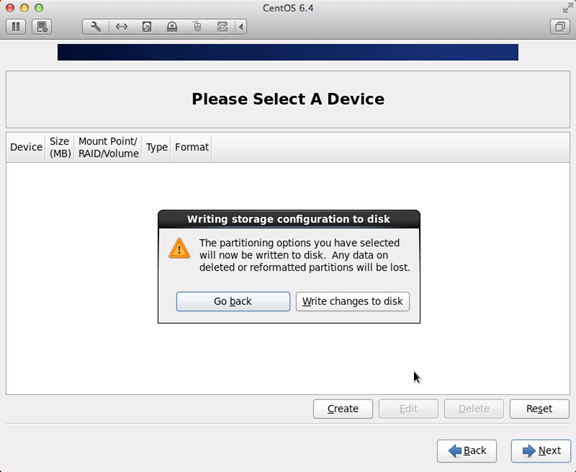
16、引导程序安装位置
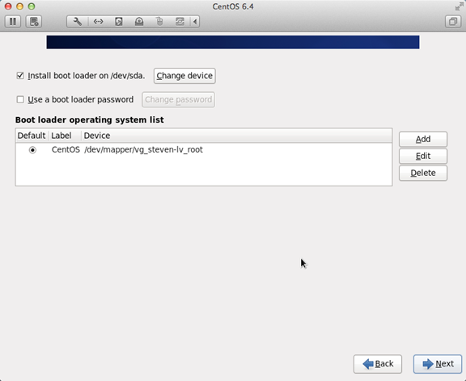
17、最重要的一步，也是本教程最关键的一步，也是其他教程没有提及的一步，按图示顺序点击
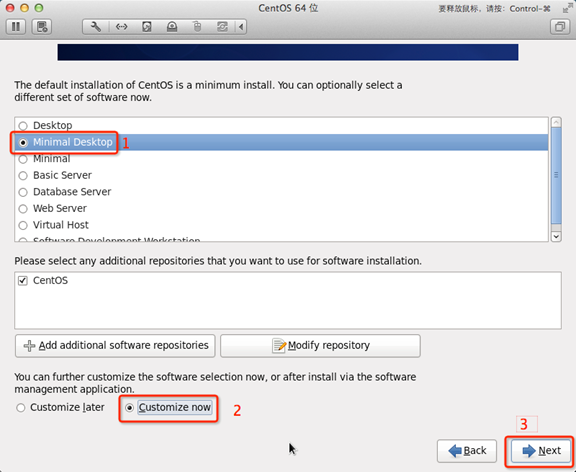
18、取消以下内容的所有选项
Applications
Base System
Servers
并对Desktops进行如下设置
即取消如下选项：
Desktop Debugging and Performance Tools
Desktop Platform
Remote Desktop Clients
Input Methods中仅保留ibus-pinyin-1.3.8-1.el6.x86_64,其他的全部取消
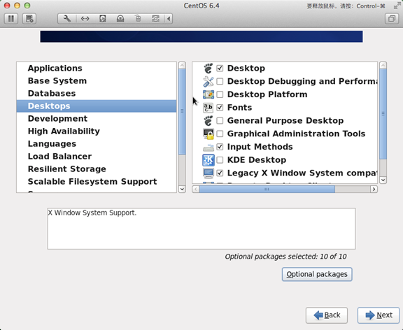
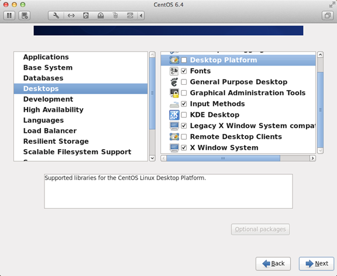
19、选中Languages，并选中右侧的Chinese Support然后点击红色区域
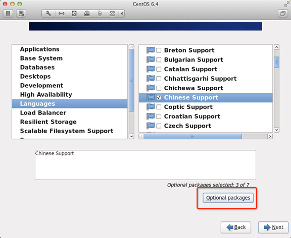
20、调整完成后如下图所示
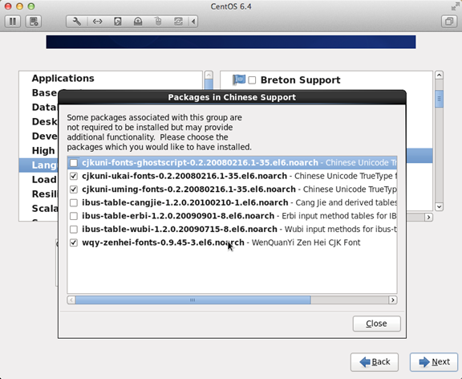
21、至此，一个最精简的桌面环境就设置完成了，
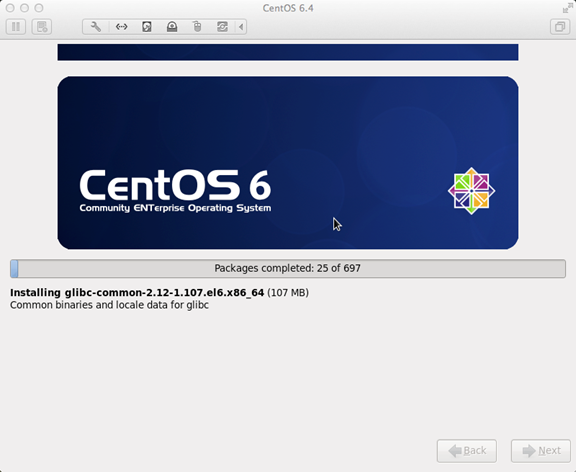
22、安装完成，重启
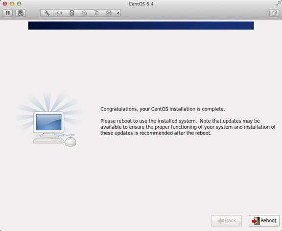
23、重启之后，的License Information
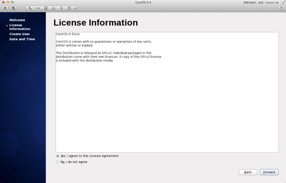
24、Create User
Username：填写您的英文名（不带.姓）
Full Name：填写您的英文名.姓（首字母大写）
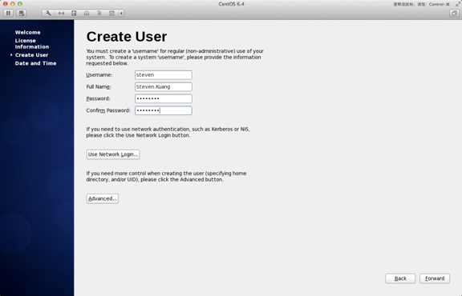
25、"Date and Time" 选中 "Synchronize data and time over the network"
Finsh之后系统将重启
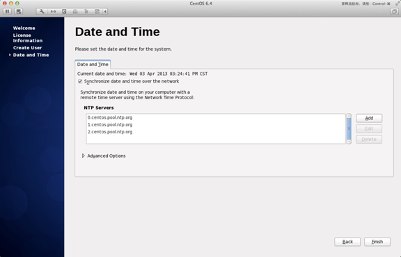
26、第一次登录，登录前不要做任何更改，这个很重要！！！登录之后紧接着退出
第二次登录，选择语言，在红色区域选择下拉小三角，选other，选中"汉语（中国）"
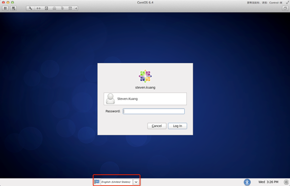
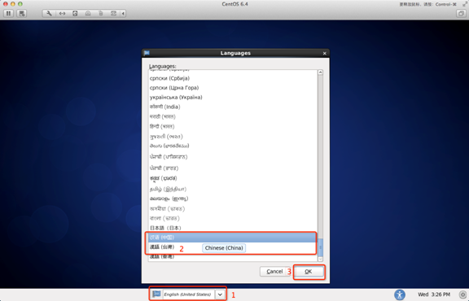
27、登录之后，请一定按照如下顺序点击！
至此，CentOS安装完成，如有其他问题，请随时与我联系！！
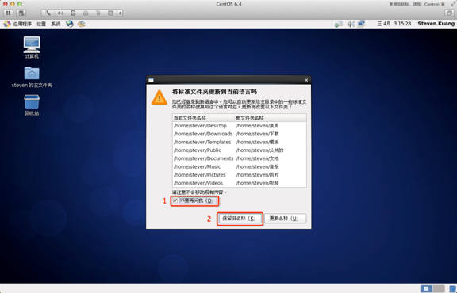


点我分享笔记
笔记需要是本篇文章的内容扩展！